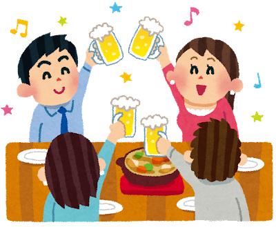

合コンに行ったことがあるなら解ける！ #合コン用語クイズ

1.次の用語の意味は？
関ヶ原
10対10以上の合コン
イケメン・美女が揃う合コン
男女ともにレベルの低い合コン
2.次の用語の意味は？
TBS
赤坂で合コンすること
テンションバリ下がる
合コン後に合コン内容を友達に報告すること
3.次の用語の意味は？
モンスターハンター
モンスタークラスの相手をお持ち帰りする人
複数人に同時にアプローチしようとする人
ゲームの話になるとやけにテンションが上がる人
4.次の用語の意味は？
情熱大陸
合コンの中で一番イケている人
自分のことを熱く語る人
23時以降になってからテンションが上がる人
5.次の用語の意味は？
コロンブス
別の合コンで会ったブスと合コンで再会すること
遠くからわざわざ来たブス
外国人の合コン相手
6.次の用語の意味は？
ゴッホ
お金が無い男子
勤務先が安定していないこと
合コンが終わってから急に相手の評価が上がること
7.次の用語の意味は？
幹事MAXの法則
幹事が合コン費用を操作してお得に合コンを楽しむこと
結局幹事が一番かわいい・かっこいいこと
幹事になると相手の幹事といい感じになりがちなこと
8.次の用語の意味は？
ドーピング
髪型で印象を盛ること
照明が暗い店舗を利用することで雰囲気イケメン・美女を演出すること
合コン前にウコンの力を借りること
9.次の用語の意味は？
校長先生
合コン参加者に混じった中年
話が長くて面白くない人
頭がハゲている人
10.次の用語の意味は？
蓮舫
理系女子
サラダを仕分けしてくれる女子
政治家並みにハキハキと話す女子